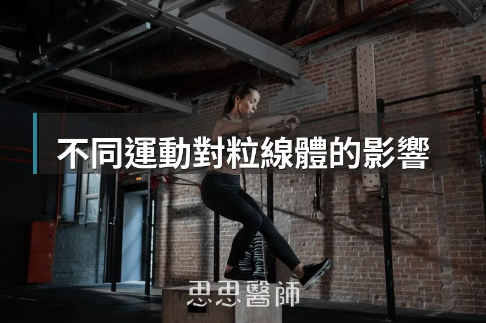

不同運動對粒線體的影響

你可能知道運動對健康好，但你知道慢跑、HIIT 和重訓，對粒線體做的事是完全不一樣的嗎？
2026 年 3 月，一篇發表在《Frontiers in Cell and Developmental Biology》的系統性回顧整理了目前最完整的證據，說明三種主要運動形式如何透過不同的分子路徑，影響粒線體品質控制（MQC，Mitochondrial Quality Control）。
粒線體不是靜止的電池
粒線體每天在融合（Fusion）和分裂（Fission）之間不斷切換，加上選擇性自噬（Mitophagy）一起構成一套即時品質管控系統：新的粒線體持續生成，損壞的持續被清除，這就是 MQC。
老化過程中，MQC 系統逐漸失靈。粒線體新生減少、融合蛋白活性下降、自噬效率變差，整個能量網絡開始碎片化，導致能量代謝效率下降、慢性低度發炎上升。這是幾乎所有老化相關慢性病的共同底層機制。
運動是目前最有效的非藥物介入方式。但不同的運動，走的路徑完全不同。
有氧耐力訓練：讓粒線體長出新的
慢跑、騎車、游泳這類持續中等強度的耐力訓練，主要走的是 AMPK-SIRT1-PGC-1α 這條路。運動中能量感測器 AMPK 被啟動，帶動 SIRT1 去乙醯化 PGC-1α，這個轉錄共激活因子進入細胞核後啟動粒線體新生程序：複製粒線體 DNA、製造呼吸鏈複合體、擴充整個粒線體網絡。
效果是可以在人體上量測到的。一項針對久坐老年人的研究發現，4 個月耐力訓練後，骨骼肌中的粒線體含量顯著增加，主要表現為粒線體融合增強，也就是粒線體網絡變得更連通、更有效率。
長期訓練的精英耐力運動員呈現另一種模式：自噬為主導、分裂受到抑制。這提示耐力訓練對 MQC 的影響是時間依賴性的，訓練初期先增量，長期之後轉為強調品質篩選。
耐力訓練還能增加 NAMPT 蛋白，恢復細胞內的 NAD+ 儲備，進一步活化粒線體去乙醯酶 SIRT3，幫助穩定呼吸鏈功能。動物研究發現，6 週耐力訓練能顯著壓低老年小鼠肌肉中的 NLRP3 發炎體蛋白，降低細胞焦亡訊號，提示耐力運動可能透過粒線體調節免疫炎症反應。
HIIT 高強度間歇訓練：清除損壞的，快速重建
HIIT 走的是一條不同的路。短暫的極高強度刺激讓 AMP/ATP 比值急劇升高，劇烈啟動 AMPK 和 p38 MAPK，快速推高 PGC-1α。即使是久坐的老年人，單次 HIIT 就能誘發 p38 MAPK 磷酸化並短期上調 PGC-1α mRNA，顯示老化肌肉對高強度刺激仍保有基本反應能力。
HIIT 特別擅長清除損壞的粒線體。高強度刺激會讓分裂蛋白 DRP1 在 Ser616 位點磷酸化，把功能不良的粒線體片段從網絡中隔離出來；接著 PINK1 在這些失去膜電位的片段上穩定下來，招募 Parkin，啟動選擇性自噬，精準清除殘骸。比較 HIIT 和傳統中強度持續訓練的研究發現，HIIT 讓老年骨骼肌的 PINK1 和 Parkin 水平更高，自噬啟動指標 LC3-II/LC3-I 比值也更高。
HIIT 的影響甚至不局限在肌肉。訓練中產生的乳酸能穿越血腦屏障，直接作用於海馬迴。研究顯示，乳酸介導的 HIIT 效果能在海馬迴中上調粒線體融合蛋白 OPA1、MFN1、MFN2，壓低分裂蛋白 DRP1 和 FIS1，同時增加腦源性神經滋養因子（BDNF）的表現，這可能是 HIIT 延緩認知老化的機制之一。
阻力訓練：穩固現有的粒線體功能
重訓主要啟動的是 IGF-1/Akt/mTOR 這條促合成路徑，目標是增加肌纖維橫截面積和強化肌力。在粒線體上，阻力訓練更像是維護工程師，而不是新建工程師。它能增加粒線體複合體 IV的活性、提升呼吸鏈效率、降低電子滲漏，並提高 SOD（超氧化物歧化酶）等抗氧化酵素的活性，保護粒線體結構免受氧化損傷。
一個值得注意的機制：阻力訓練使用的是 PGC-1α 的特殊亞型PGC-1α4，而不是耐力訓練主導的 PGC-1α1。PGC-1α4 不直接驅動氧化磷酸化基因，而是透過 IGF-1/Akt 路徑抑制 Myostatin，促進肌肉肥大。這解釋了為什麼重訓能讓肌肉大幅增長，但粒線體含量不一定等比增加。
儘管如此，6 週阻力訓練被發現能讓老年男性骨骼肌的粒線體 DNA（mtDNA）廣泛去甲基化，特別是 D-Loop 區域，這是粒線體 DNA 複製和轉錄的關鍵調控區。去甲基化後，粒線體基因表現增加，呼吸鏈複合體 III 和 IV 蛋白水平也隨之提升。
此外，阿茲海默症動物模型研究發現，阻力訓練能減少神經發炎、改善海馬迴的粒線體健康，提示其神經保護潛力超出一般人的想像。
三種運動，做同一件事的不同面向
把三種運動放在一起看，會發現一個有趣的互補結構：
有氧耐力訓練適合長期管理老化相關的粒線體能量代謝衰退，讓粒線體網絡更大、更連通、更有效率，同時降低發炎。
HIIT擅長快速清除損壞的粒線體，並同步改善腦部的粒線體健康，特別適合有認知保護需求的人。
阻力訓練的核心貢獻是維持現有的粒線體功能效率，同時保住肌肉量和肌力。肌肉本身就是粒線體密度最高的組織之一，沒有肌肉，談粒線體健康的基礎就沒了。
三種運動不是競爭關係，而是應該組合使用。根據目前的證據，中年之後優先考慮耐力訓練和阻力訓練的組合，再加入每週一兩次的 HIIT 作為補充，是目前最接近「完整保養粒線體」的運動處方。
（本文由我規劃架構與觀點，並協同 AI 校正與潤飾語句）
 空腹小雞跟思思醫師一起斷食，順便養一隻小雞來養小雞 →
空腹小雞跟思思醫師一起斷食，順便養一隻小雞來養小雞 →
好朋友週信
每週五一封：《健康駭客週報》這集的研究重點，加上家醫專欄這週的新文章。免費，隨時可以退訂。
延伸閱讀

多吃的那幾口，正在燒壞你的粒線體
過量進食導致粒線體電子傳遞鏈電子堆積，形成超氧化物自由基增加氧化壓力，直接損傷粒線體DNA。

小資族的生物年齡檢測，PhenoAge
PhenoAge 用九項常規血液檢查推算生物年齡，比表觀遺傳時鐘便宜得多，能預測死亡率且能透過飲食干預改善。

GHK-Cu，抗老的另一條路
GHK-Cu 是隨年齡下降的銅螯合物，能改變 31% 的基因表現、促進組織修復並具抗發炎作用，但目前注射劑無合法管道。